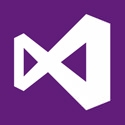
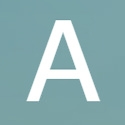
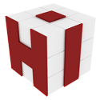
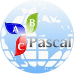

IT programs
Программы для программирования
Здесь представлены лучшие программы для программирования. Некторые из них больше предназначены для новичков, а некоторые для опытных программистов.

Scratch 2.0
Одна из лучших обучающих программ для
создания программ на русском языке. Разработана для практического
изучения программирования. Имеет очень простой интерфейс,
визуальный редактор, но довольно узкий функционал.
Скачать программу можно на
официальном сайте

Visual Studio
Профессиональная среда разработки программного обеспечения.
Включает в себя огромный набор возможностей и инструментов,
необходимых для создания программ любой сложности.
Скачать программу можно на
официальном сайте

Алгоритм
Удобный конструктор, для создания программ без
использования языков программирования. Обладает
гибким функционалом и понятным интерфейсом. Простой
в освоении, Алгоритм 2, прекрасно подойдет для
новичков, желающих быстро создать свою полноценную программу.
Скачать программу можно на
официальном сайте

HiAsm
Визуальный конструктор, позволяющий создавать программы
без знания специальных языков. Если вы ещё новичок и
хотите понять принцип визуального программирования,
то HiAsm может стать для вас прекрасным инструментом для практики.
Скачать программу можно на
официальном сайте

PascalABC
Язык программирования нового поколения
с бесплатной средой разработки на русском языке, одновременно
простой и мощный. Подойдёт как начинающим программистам, так и
разработчикам с многолетним опытом. Скачать программу можно на
официальном сайте